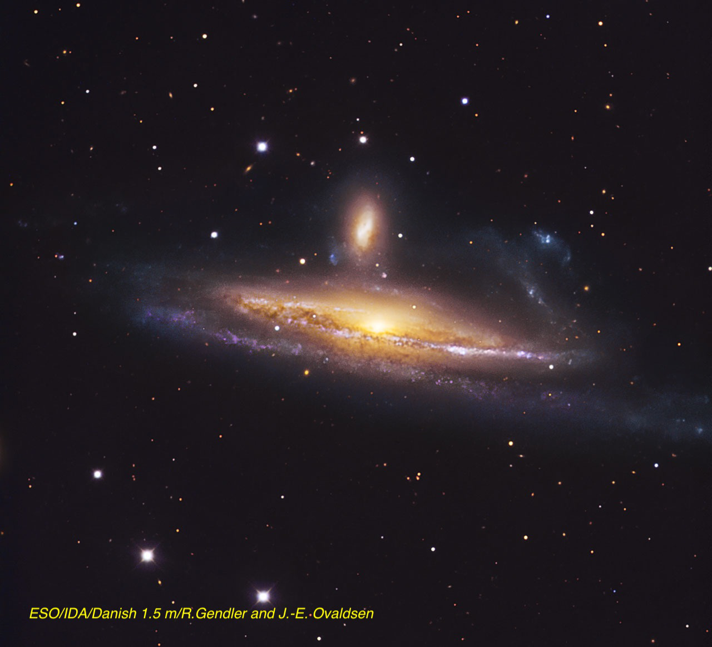
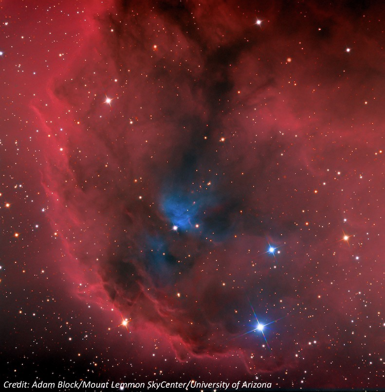
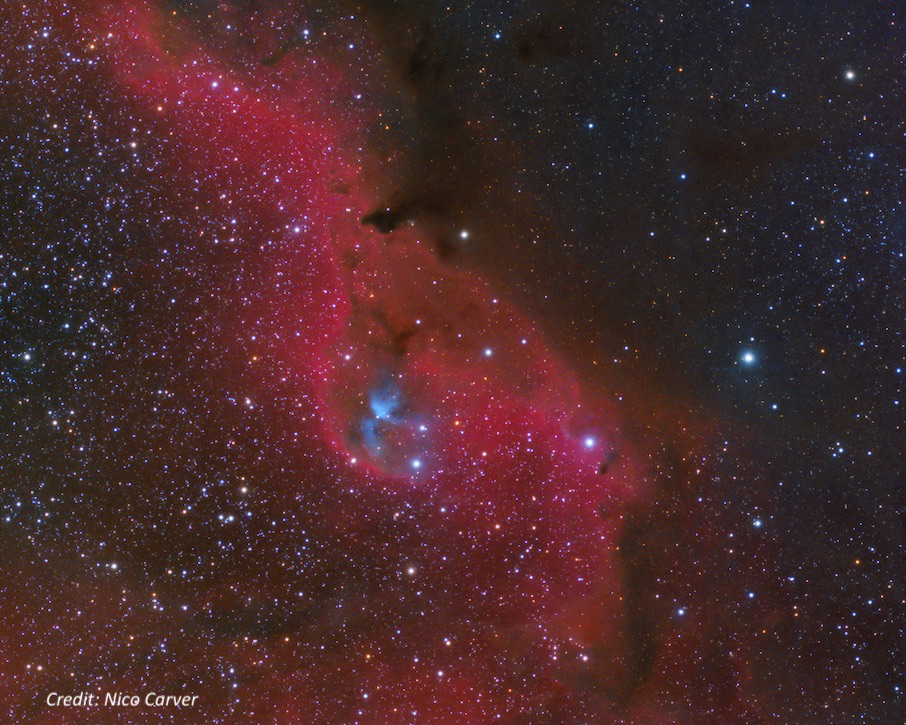
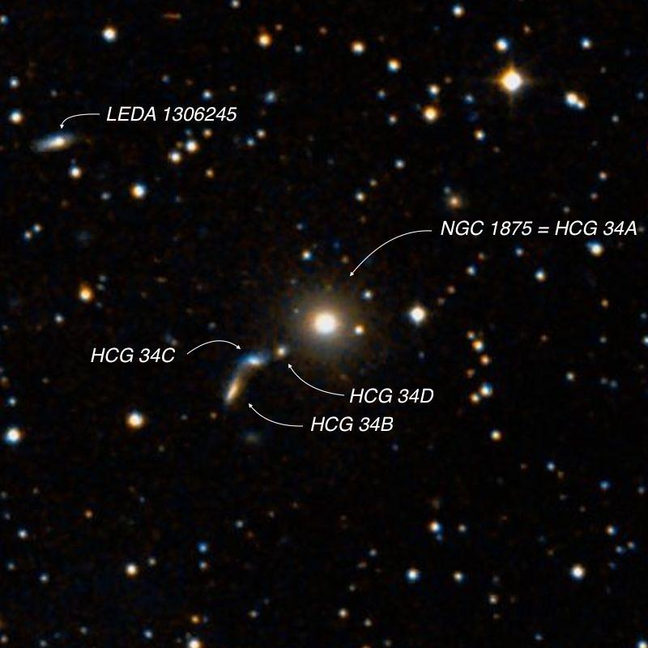

VV 169 = Arp 327 = HCG 34
- Name: VV 169 = Arp 327 = HCG 34
- RA: 05h 21m 47.4s
- Dec: +06° 40' 37"
- Type: Galaxy Chain (quartet)
- Size: 1.25' length
- Light travel time: ~425 million years
Boris Voronstov-Velyaminov first catalogued this group in his 1959 Atlas and Catalogue of Interacting Galaxies. He labeled four galaxies in a chain (a, b, c, d) with NGC 1875 = VV 169a.

Halton Arp followed suit and included Arp 327 in the category of "Chains of Galaxies" in his 1966 Atlas of Peculiar Galaxies

Finally, Paul Hickson included it in his 1982 paper Systematic Properties of Compact Groups of Galaxies. HCG 34 is the only group in Orion!

The elliptical galaxy NGC 1875 (RC3 classifies it as a possible lenticular) is the dominant member. It was missed by the Herschels and discovered by Albert Marth using William Lassell's 48" f/9.4 fork-mounted speculum-reflector in 1863. I'm guessing a 10" is close to the minimum aperture to reveal this galaxy -- perhaps forum members can test this theory! Here are 3 of my own observations, the last of course on Jimi's scope --
NGC 1875 = HCG 34A = VV 169a
17.5"(220x): faint, round, 20" diameter, very faint stellar nucleus. Located 1.0' E of a mag 13.5 star.
24" (375x): moderately bright, fairly small, round, 0.4' diameter, well concentrated with a small brighter core. A mag 13 star lies 1' W and a mag 16 star is just 0.4' W of center.
48" (488x): bright, round, 30" diameter, brighter core.
Three much fainter galaxies extend in a short string to the southeast (in order from NGC 1875: HCG 34D/34C/34B). Hickson measured total B magnitudes of 18.4, 17.3 and 17.6, respectively, for the trio. I was able to glimpse HCG 34B and 34C in my 24" though they were just dim blurs, and I missed the virtually stellar HCG 34D.
HCG 34B = VV 169c
24" (375x): extremely faint, very small, slightly elongated, ~10" diameter.
48" (488x): faint, very small, elongated 2:1 ~N-S, 20"x10".
HCG 34C = VV 169b
24" (375x): extremely faint and small, round, ~6" diameter.
48" (488x): faint, very small, slightly elongated E-W, 12"x8".
HCG 34D = VV 169d
48" (488x): extremely faint and small, round, 6" diameter.

Although Hickson only included 4 members in HCG 34, you'll notice LEDA 1306245 (Megastar labels it MAC 0521+0643B) labeled in the image just above (3.5' NE of NGC 1875). It shares a similar redshift with the quartet, so it really should have been included as a 5th member. In fact, if you miss B, C and D, go after this galaxy -- I found it slightly easier!
This is a challenging OOTW that should be attempted on a transparent night, but whether you're successful or not with the fainter members,
GIVE IT A GO AND LET US KNOW!